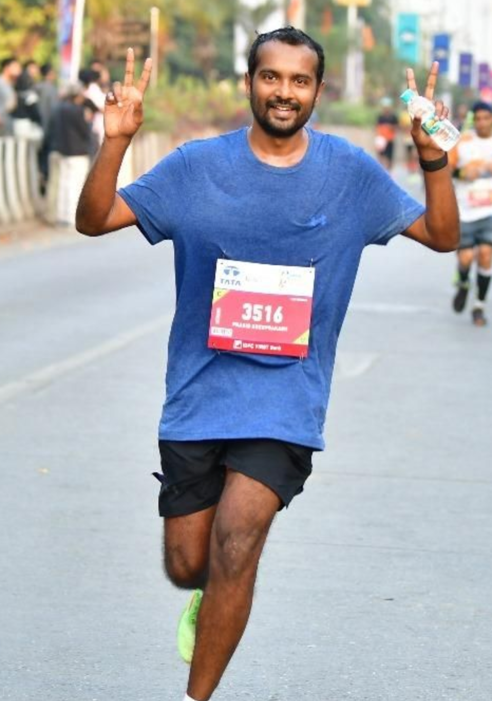
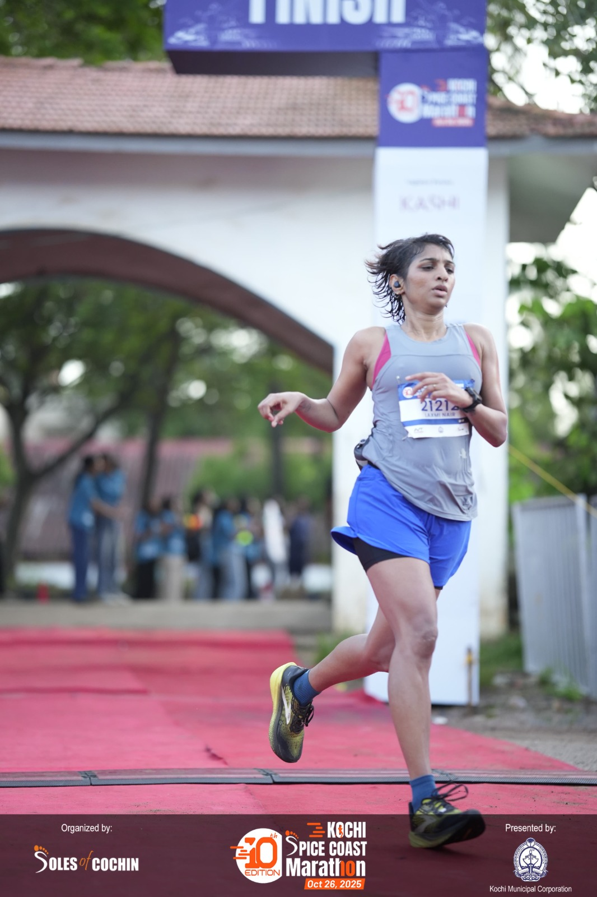

A platform born out of a shared love for running and a desire to build something meaningful for the community.
A few kilometers, a shared dream, and a platform built for every runner.
Let's Talk Running (LTR) was inspired by Haruki Murakami's book where he talks of running not just as an exercise but also as a metaphor for life. It was during a casual chat in 2020 that Laxmi and Prasid came up with the idea of LTR as a way to converse with runners to help them get the most out of running. We interviewed dozens of runners to understand what running meant to them and realized that it is more than just fitness. Running provides clarity of thought, peace of mind and a structure for their lives to revolve round. The idea of LTR was to build a platform to support runners seeking the journey.
Two runners who turned their passion into a platform.

Prasid started running in 2014 as a way to add some movement into his life. But soon this turned into an integral daily routine. He finds training to be empowering and believes that a moving body helps to calm the mind. He has completed 4 marathons and 10+ half marathons over the years with a personal marathon best timing of 3:19. He enjoys coaching and using data as a way to track and improve fitness.
View on Strava
Laxmi has been running for over a decade, racing distances from 5Ks to 50k ultras with multiple podium finishes. After treatment for leukaemia, she rebuilt her fitness and returned to run a 2:02 half marathon, shaping a training philosophy grounded in patience and sustainability. She is deeply curious about what it takes to build strength, endurance, and a resilient body, and has put much of that learning into practice through consistent, thoughtful training.
View on Strava